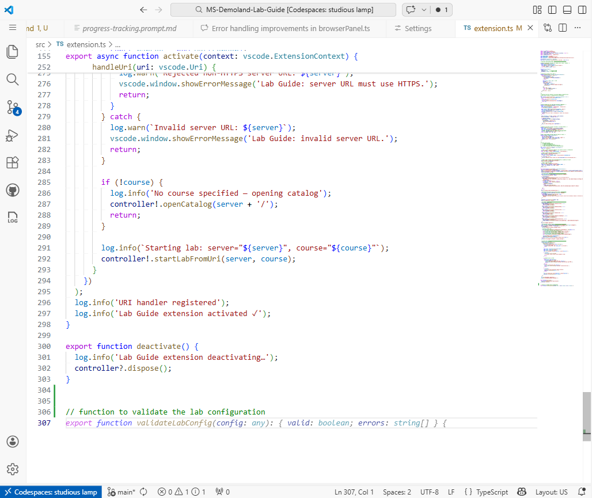
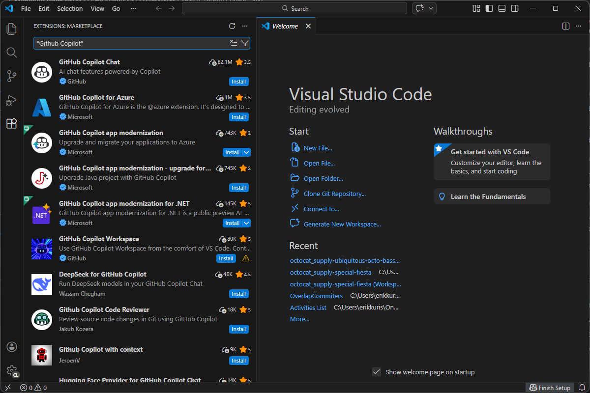
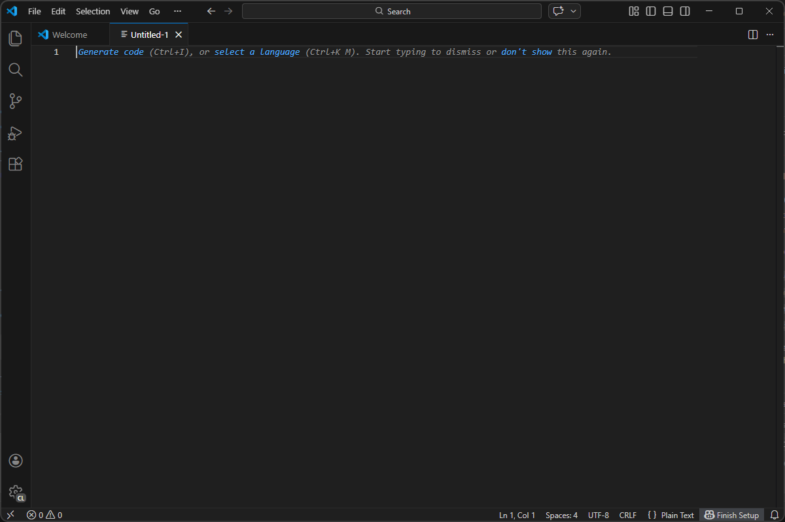
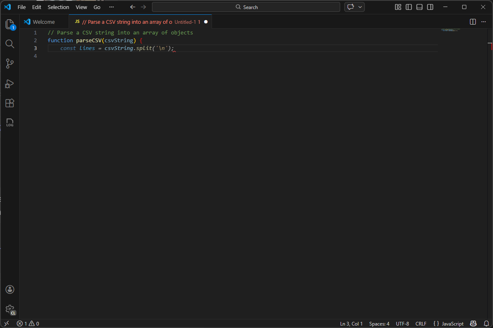
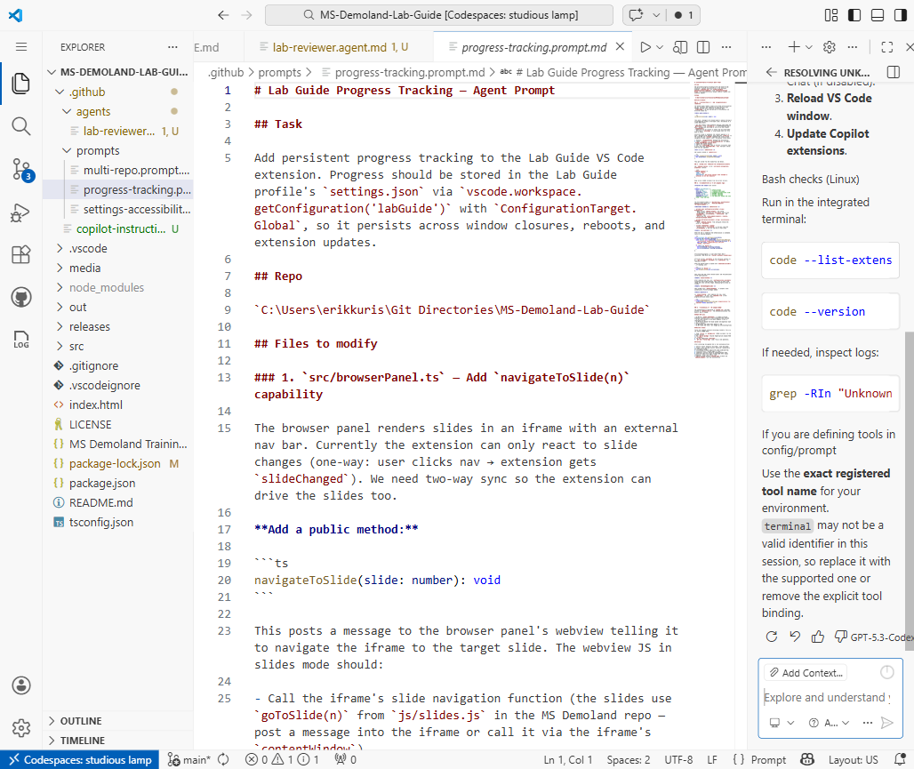
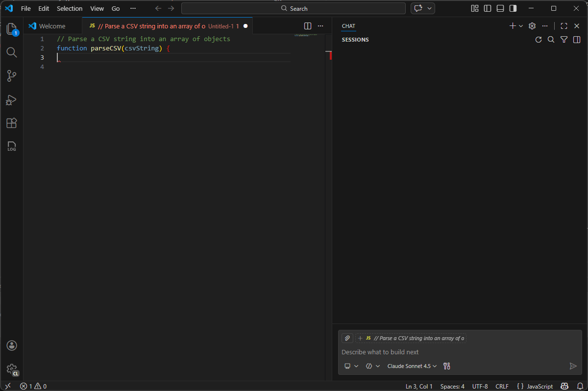

Get hands-on with GitHub Copilot in VS Code - from first activation to configuring your workspace and letting AI accelerate every keystroke
Overview
What We'll Cover
Today's Journey
What is GitHub Copilot? - AI pair programming at a glance
Getting Started - Signing in and verifying your license
Inline Completions - Ghost text, Tab to accept, and multi-line suggestions
Copilot Chat - Ask questions, get explanations, generate code
Workspace Configuration - Settings, per-language controls, and team consistency
Live Demo - Build a real function end-to-end with Copilot
Part 1
What Is GitHub Copilot?
Your AI Pair Programmer
GitHub Copilot is an AI-powered code assistant that lives inside your editor
Powered by a catalog of large language models from OpenAI, Anthropic, Google, and more; available choices depend on your plan and policy
Suggests whole lines, entire functions, tests, documentation, and even terminal commands
Works in VS Code, JetBrains IDEs, Neovim, Visual Studio, and github.com
How Copilot Works
Context gathering - Copilot reads your open file, neighboring tabs, comments, and function signatures
Model inference - Sends relevant context to the applicable model service; chat and inline suggestions have separate model choices
Suggestion delivery - Returns completions as grey "ghost text" in your editor, or full answers in chat
Know your data policy - Business and Enterprise data is not used to train models; retention and processing depend on the feature, model, and policy
graph LR
A[Relevant Code & Context] --> B[Copilot Service]
B --> C[Applicable Model Service]
C --> D[Suggestion Returned]
D --> E{Accept?}
E -->|Tab| F[Code Inserted]
E -->|Esc| A
Copilot Plans
Free
2,000 completions/mo • Limited chat and agent usage
Inline completions, chat, CLI. Great for trying Copilot at zero cost.
$0 USD
Pro
$15 AI credits/mo • Unlimited completions
Cloud agent, code review, model selection. Free for verified teachers and popular OSS maintainers.
$10 USD/user/mo
Pro+
$70 AI credits/mo • Unlimited completions
Access to a broader selection of premium models, subject to current availability.
$39 USD/user/mo
Max
$200 AI credits/mo • Unlimited completions
The highest individual credit allowance; check current model availability and access terms.
$100 USD/user/mo
Business
$19 in pooled AI credits per seat • Unlimited completions
Organization management and policy controls. Business data is not used for model training; processing and retention terms vary.
$19 USD/seat/mo
Enterprise
$39 in pooled AI credits per seat • Unlimited completions
A larger organization credit pool and enterprise capabilities. Content exclusion is available on both Business and Enterprise.
$39 USD/seat/mo
AI credits (1 credit = $0.01 USD) measure model/token usage. Individual totals include fixed base credits plus variable flex. Paid completions and Next Edit Suggestions are not billed in AI credits. Verified students may qualify for the separate free Student plan.
Verified October 27, 2026. Eligibility, credits, and model access can change. See current plans; organization policies apply.
Part 2
Getting Started

Signing In & Activating Copilot
Use a current stable VS Code; open the Copilot status bar menu and select Use AI Features
Sign in with the GitHub account that has your personal plan or organization-assigned seat
If extension setup is needed, use GitHub's unified extension: GitHub.copilot-chat
The older GitHub.copilot extension is not the unified extension; follow the current setup guide

GitHub Copilot Chat
Signing In & Verifying Your License
Open the Copilot status bar menu → Use AI Features, then follow the sign-in prompts
Authorize the VS Code GitHub extension in your browser
If your org uses Copilot Business/Enterprise, ensure your admin has granted you a seat
Open the Copilot status dashboard to check your account and usage allowance
Troubleshooting: check firewall rules, proxy settings, or SSO requirements
Screenshot pending: current sign-in and status dashboard.
Part 3
Inline Completions
Ghost Text - Your New Superpower
As you type, Copilot shows grey "ghost text" - predicted completions inline
Press Tab to accept the full suggestion
Press Ctrl+→ to accept word-by-word
Press Esc or keep typing to dismiss and get a new suggestion
Browse alternatives with the suggestion toolbar; shortcuts depend on your platform and keybindings
Next Edit Suggestions predict related edits: press Tab to navigate to a suggestion, then Tab again to accept

Ghost text and hotkeys
Getting Better Suggestions
Write a comment first - describe the function in plain English, then let Copilot generate it
Meaningful names - calculateShippingCost gives better results than doStuff
Open related files - Copilot uses neighboring tabs as context
Type signatures and JSDoc - the more structure you give, the better the completions

Ghost text completing from a comment
Part 4
Copilot Chat
Conversational AI in Your Editor
Open Copilot Chat with Ctrl+Alt+I (Windows/Linux default), or use the Chat menu
Ask questions in natural language: "How do I read a file in Node?"
Copilot responds with explanations, code snippets, and follow-up suggestions
Add important context explicitly: a selected function, relevant file, error, or test output
Use inline chat (Ctrl+I) for quick edits right in the editor
Use controls beside the chat input to choose the session target, agent, model, and permissions; available choices vary

Choosing Your Model
Use the model selector beside the chat input; Auto is a useful beginner starting point
Available provider families include OpenAI, Anthropic, and Google; the catalog changes
Each model has different strengths: speed, reasoning depth, context window size, and cost
AI credit usage depends on model and input, output, and cached tokens; inspect pricing details in the picker
Model choices depend on your plan, organization policy, and session target; some accounts offer Auto only
Useful Chat Commands
/explain - Explain selected code in plain language
/fix - Suggest a fix for problems in the selection or file
/tests - Generate unit tests for the selected code
/doc - Generate documentation comments in editor inline chat
Ask a project question naturally; attach important files with Add Context or supported # context items

Chat interface
Chat Modes: Ask, Plan & Agent
Ask: questions, explanations, and brainstorming without changing your code
Plan: research the task and propose a step-by-step plan; review it before separately choosing implementation
Agent: implement multi-step changes and use available tools to validate them; inspect diffs and tool requests
Choose the agent and permissions beside the chat input; defaults and available controls vary
Vision: supported models can analyze attached images; availability depends on your setup
Chat Layouts and Separate Conversations
Keep Chat beside your code, or use New Chat (+) → New Chat Editor for more space
Start a new conversation for an unrelated question; moving a conversation doesn't automatically create a new one
Separate conversations are not separate working copies: agents using the same folder can change the same files
For now, complete and review one implementation task at a time
Parallel implementation, worktrees, and integration belong in a later agent workflow